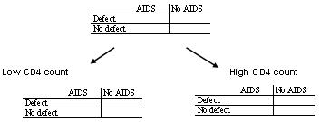
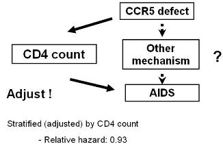
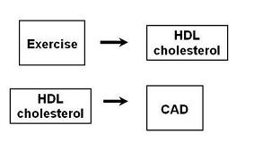
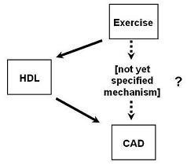

Lead Author(s): Jeff Martin, MD
What Is Not A Confounder?
A variable that is an intermediate step in the causal path under study
- between the exposure in question and
- a disease is not a confounding variable.
IF THE VARIABLE IS ON THE PATHWAY UNDER STUDY. IT IS AN INTERMEDIARY VARIABLE.
How do you determine if it is a confounder or an intermediary variable?
Determine Confounder: What Is Your Research Question?
The following example from HIV research shows how you determine if the variable of interest is a confounder or intermediary variable by looking at the research question.
Recently, the human cellular receptor for HIV was determined.
- It is called CCR5 and it is found on CD4 cells.
- Shortly after its discovery, genetic defects in CCR5 were described and there was immediate interest in whether persons who have genetic defects in this receptor have slower disease progression to AIDS.
We know that CD4 count is a potent predictor of time-to-AIDS.
How should CD4 count be handled in assessing the association
- between CCR5 defect status and progression in HIV disease to AIDS?
So, on the surface, it appears that CD4 count HIV viral load meets the criteria for confounding;
- it is associated with the exposure and associated with the disease.
- That said, how should CD4 count be handled in assessing the association between CCR5 defect status and progression in HIV disease to AIDS?
To determine if CD4 count is a confounding variable we ask:
- Is CCR5 associated with progression to AIDS, independent of CD4 count?
- For intermediary variable, the the question would ask if CCR5 is associated with progression to AIDS, irrespective of mechanism?
We need to stratify to discuss this question:

To stratify you would form homogenous strata of low CD4 count and high CD4 count.
- If you did this and if turned out that the effect of CCR5 defects are via effects in CD4 count,
- then you have guaranteed that the outcome of AIDS is going to be very similar and perhaps identical in all persons in a given stratum.
Hence, if this is the mechanism you’re proposing and there is no other mechanism, then you do not want to adjust for it.
In other words, if knowing the CD4 count is all you need to know about the effect of CCR5,
- then everyone in this stratum will have the same outcome experience, progression to AIDS.
- The same thing will happen with the other stratum.
Adjusting for Confounder to Answer Your Research Question
Taylor published findings on adjusting for the confounder if your research question is:
- "Is CCR5 associated with progression to AIDS, independent of CD4 count?"

When the question was asked whether or not a CCR5 defect was associated with progression to AIDS via another mechanism, other than CD4 count,
- there was no strong evidence of an effect, relative hazard 0.93.
If you had not adjusted for CD4 count first,
- you would not have seen an effect of CCR5.
Hence, you need always need to keep in mind exactly what the research question is and whether or not adjustment is needed to answer it.
Determine Confounder: What Is the Pathway Under Investigation?
After looking at your research question to determine whether you have a confounder or an intermediary variable, the next question is What is the pathway under investigation?
In this example we are looking at the relationship between exercise and CAD,

We know that exercise influences HDL and HDL is associated with coronary artery disease, but is it a confounder or an intermediary?
The answer is that it depends upon the pathway under investigation.
If interest is in a pathway other than through HDL, then HDL is a confounder
- Therefore, HDL is extraneous to pathway under study
Confounding factors are extraneous factors

If you really don’t care about the exact pathway or you are only thinking about one pathway by which exercise can influence the development of heart disease, and HDL was right in the middle of this pathway,
- then HDL is an intermediary variable and we would not want to control for it.
- HDL would not be a confounder.
References
Taylor, J. M., Wang, Y., Ahdieh, L., Chmiel, J. S., Detels, R., Giorgi, J. V., et al. (2000). Causal pathways for CCR5 genotype and HIV progression. J Acquir Immune Defic Syndr, 23(2), 160-171.
 DAG: HIV-CD4-CCR5
DAG: HIV-CD4-CCR5